Get in touch.
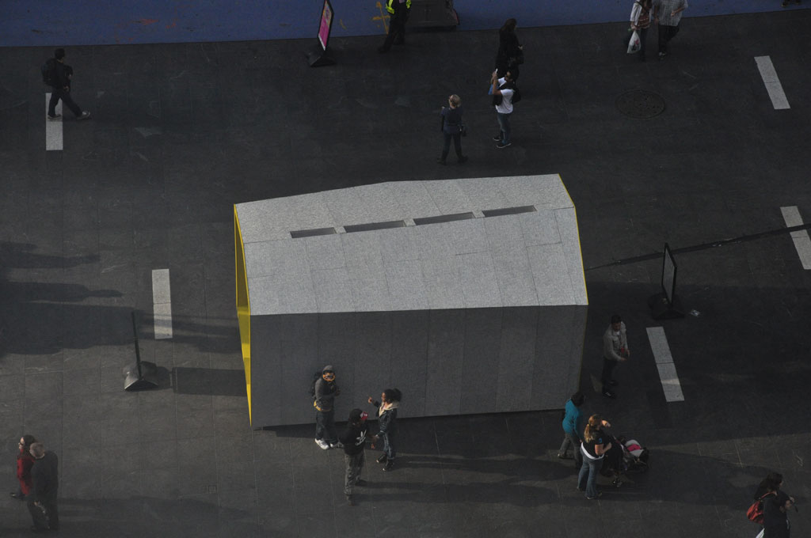
Concept & Architecture:
Matter Practice Architecture
Photo Credit:
Ka-Man Tse and TS Webcam
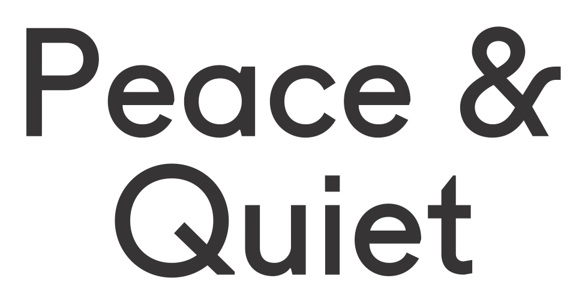
When Matter Practice an architecture studio in Brooklyn first approached us about the project we were skeptical about whether or not the public at large would be willing to participate. Especially given the dialogue stations location, Times Square. Which is arguably one of the world’s great public intersections, has an estimated 500,000 people passing through it everyday. In addition to that the station was also located opposite the US Army recruiting station—the possible commencement point for arduous and dangerous journeys.
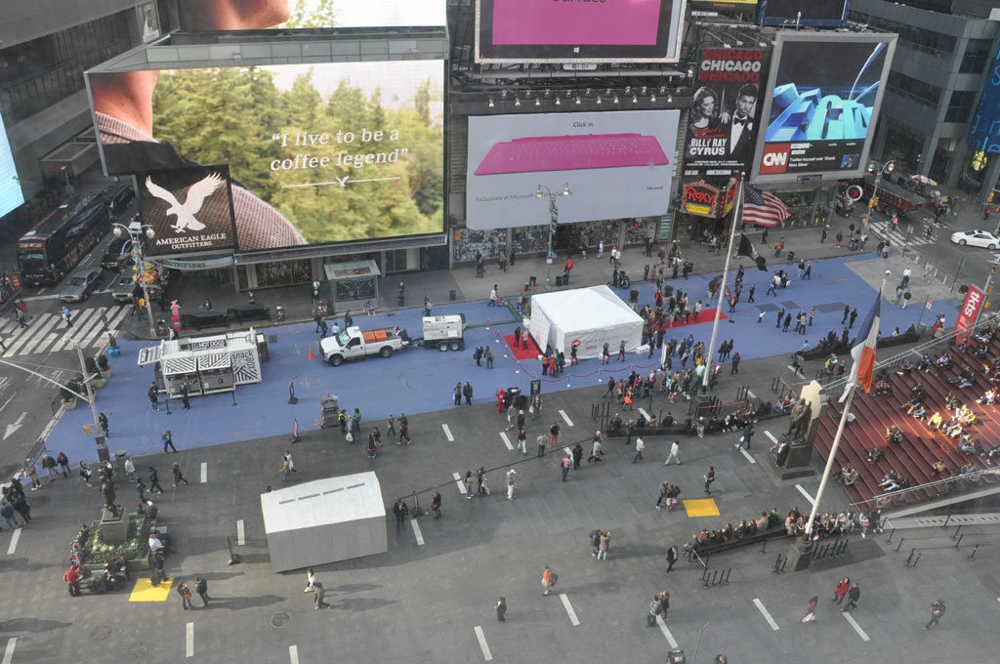
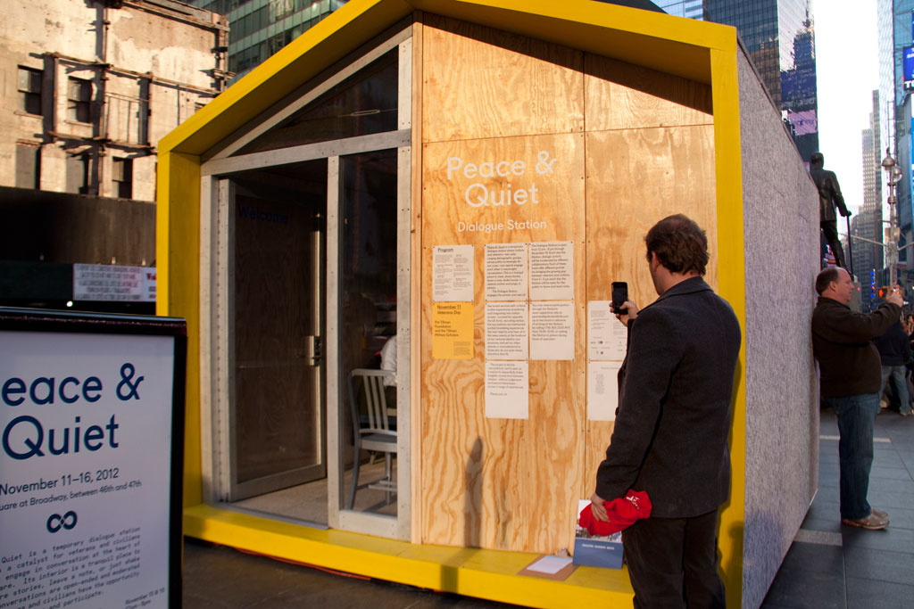
Peace & Quiet is a temporary dialogue station where veterans and civilians—two wide ranging demographic groups, whose paths increasingly do not cross—can openly engage each other in meaningful conversation. It is a tranquil place to meet, share stories, leave a note, shake hands—a veteran-civilian exchange, in person. Beyond politics, stereotype or judgement; bridging the often unnecessary gap.
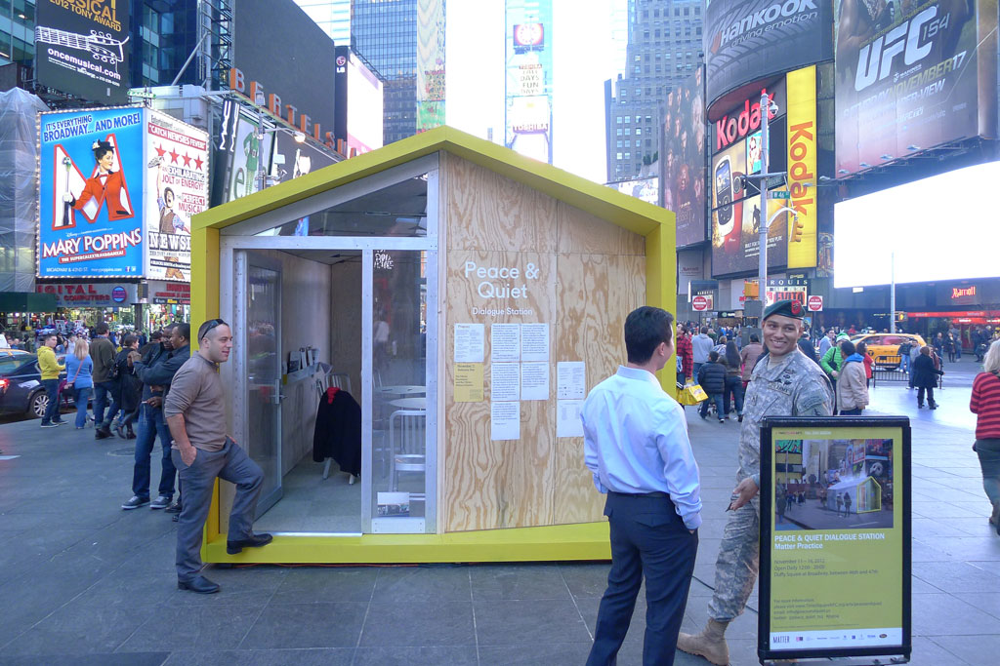
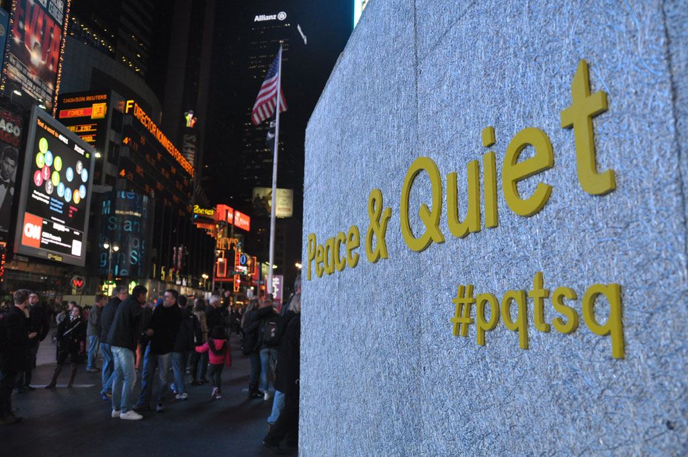
We knew that the communication between the station and the public also had to be nonpartisan and inviting. The graphic system and design was Inspired by announcement boards often found in post offices in the states as a departure point.
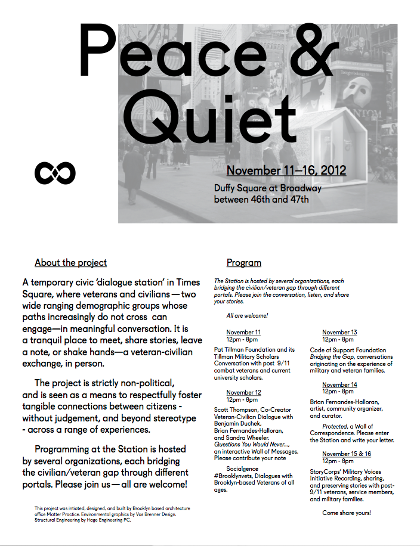
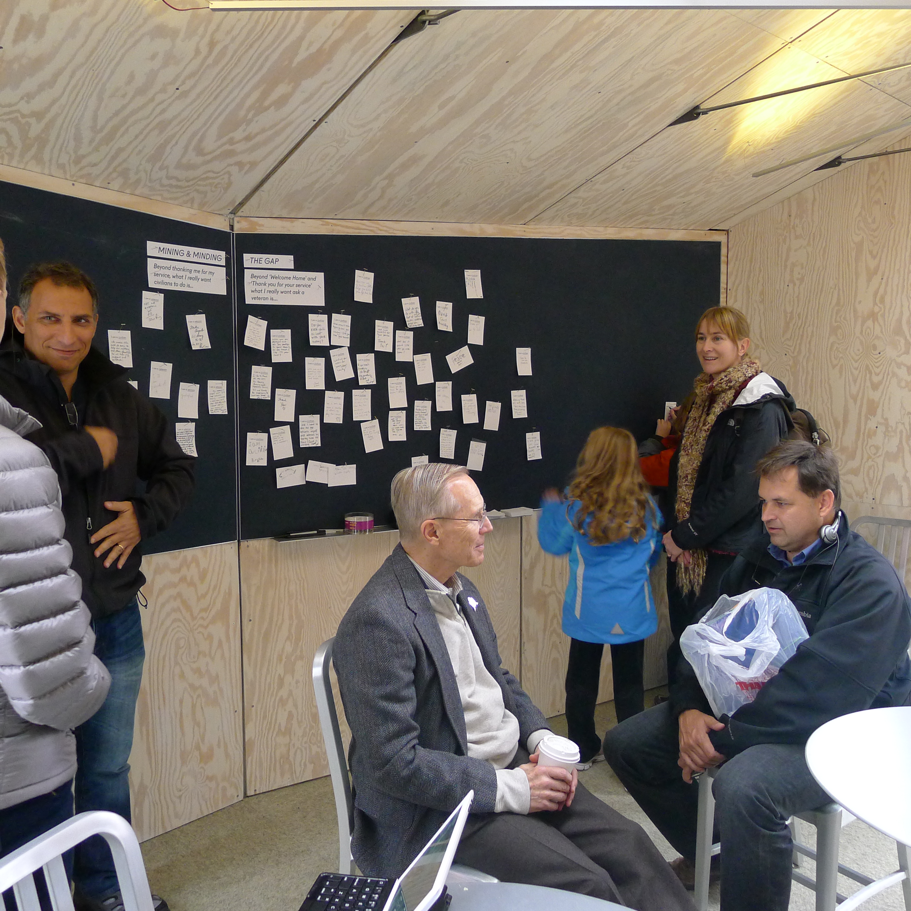
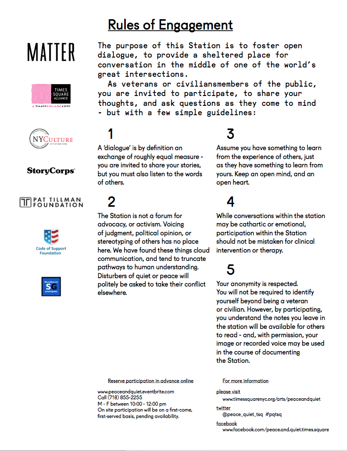
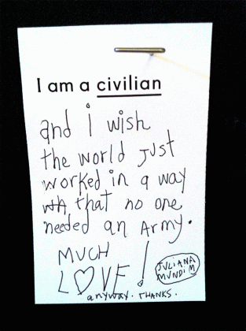
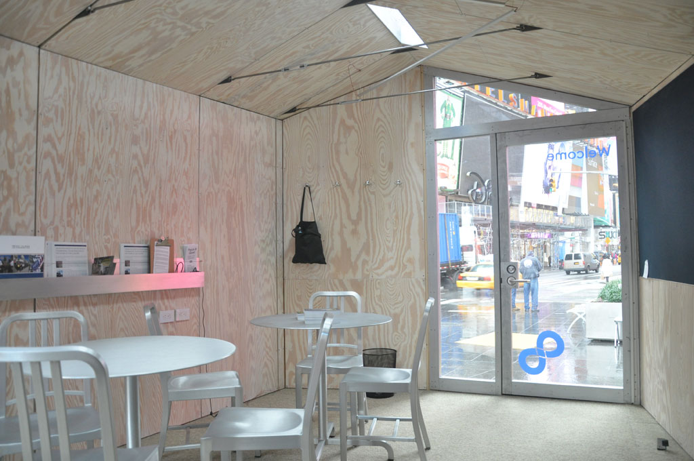
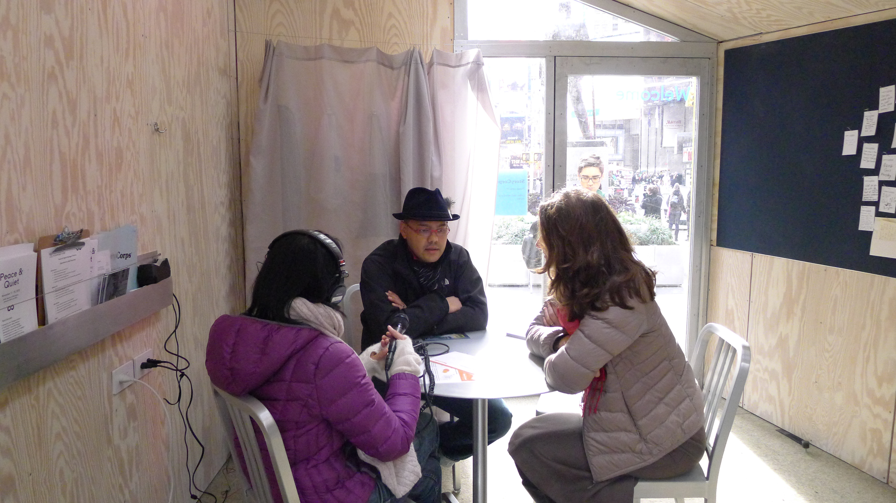
Peace & Quiet is now traveling the states collecting stories.
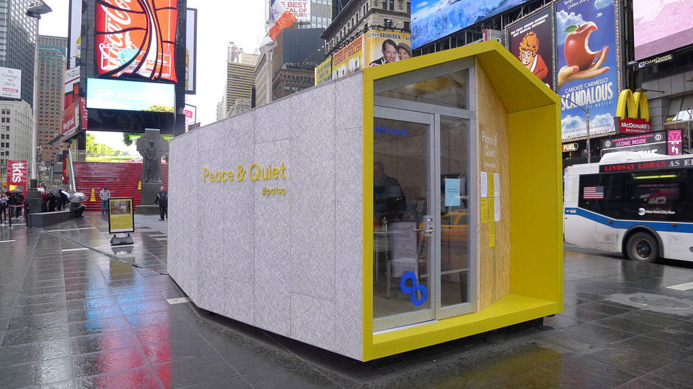